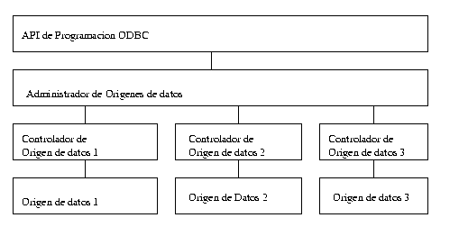

Autor:
Juan Antonio Martinez Castaño
E-mail:
jantonio@drake.dit.upm.es
Como explicamos en el número anterior de Linux Actual, ODBC es un API de interfaz entre clientes de bases de datos y servidores de bases de datos. La figura 1 ilustra este esquema:
|  |
| figura 1: Estructura en capas del API ODBC |
|---|
La primera capa constituye la librería del API que utilizan las diversas aplicaciones que "hablan" ODBC. Microsoft proporciona para sus sistemas el fichero ODBC32.DLL, que contienen el API y el interfaz con el sistema operativo, permitiendo a los desarrolladores de controladores ODBC incluír dicha librería en sus distribuciones ( de la misma manera que para la DLL de controles Visual Basic VBRUN.DLL ). Para sistemas UNIX, el proyecto FreeODBC, ha desarrollado su propia librería GPL libodbc.so.x.x que es totalmente compatible con las especificaciones descritas por Microsoft
El administrador de orígenes de datos es el responsable del "rutado" de peticiones de ODBC desde la librería hasta los controladores. Para ello se discriminan tres tipos de orígenes de datos: de usuario, de archivo y de sistema. Esta nomenclatura es motivo frecuente de confusión: cuando desde Windows se abre desde el panel de control el menú de "controladores ODBC" se encuentra con esta clasificación, y cuando abre cada una de las ventanas se encuentra con los mismos contenidos... Vamos a explicarlo un poco:
Por último, cada origen de datos tiene asociado un controlador, que actúa de "pasarela" entre el API y el acceso físico a los datos
Un primer paseo por el API de ODBC
En el CD-Rom que acompaña a este número de la revista se incluyen
bajo el directorio iODBC-1.0 los ficheros correspondientes a la libreria
ODBC para Linux, y los drivers ODBC para PostGreSQL y MySQL
bajo Linux. Descomprimamos el paquete, y echemos un vistazo a los ficheros
odbc_types.h y odbc_funcs.h. Estos ficheros constiuyen el el
interfaz del API ODBC tal como ha sido definido por Microsoft y definen la
lista de funciones y definiciones que todo driver ODBC debe cumplir ( bien
totalmente o en parte, en función del nivel de conformidad del driver )
Del mismo modo, descomprimiendo los ficheros de la librería iODBC, se obtienen los ficheros isql.h e isqlext.h que contienen las definiciones de tipos de datos y los codigos de las diversas llamadas a la librería del API ODBC.
Podemos observar que el API ODBC no es sino una llamada a una función
de entrada, en la que, dependiendo de los parámetros especificados
se realizan unas u otras funciones. Se observa una correspondencia casi
lineal entre los códigos de entrada del API ODBC y las funciones
definidas para el driver PostGreSQL. Esta correspondencia, que en Linux/UNIX
es lineal, en sistemas MS-Windows "atraviesa" el sistema operativo (?) donde el
administrador de orígenes de datos redirecciona las peticiones a los
diferentes drivers instalados.
En cambio, en Linux/UNIX, la misión del administrador de
orígenes de datos es realizada por la propia librería. Existe
para ello un fichero iodbc.ini donde se le especifican los drivers
y los modos de acceso. ¿ Cómo se realiza la conexión entre
el API y el driver?. Mediante un sistema de "dynamic loading" de los diversos
drivers de cada gestor de base de datos, en función de las
especificaciones del fichero iodbc.ini
Llegados a este punto preguntamos: ¿Cómo funciona de cara al programador la librería ODBC?. La respuesta es ridículamente sencilla: el API ODBC consiste en un interfaz que implementa un método de pasar peticiones en lenguaje SQL a través de una serie de funciones. Con ODBC podemos:
Remitimos al lector a la literatura indicada en las referencias para buscar las especificaciones y descripciones de cada nivel de compatibilidad
|
¿Cómo se aplica ésto en sistemas UNIX? El proyecto
FreeODBC ha desarrollado una librería, denominada iODBC, que
cumple con las especificaciones del API ODBC 2.0 de Microsoft, y que integra
las funciones de API y de administrador de orígenes de datos. Cada
servidor de bases de datos provee un driver que hace las funciones de
controlador de orígenes de datos y de origen de datos de sistema
específico de cada servidor de bases de datos.
Existe un fichero ${HOME}/.iodbc.ini, que indica a la librería
libodbc.so.x.x, los controladores de que dispone cada sistema, y
cómo se accede a ellos. Todo el interfaz esta implementado mediante
librerías dinámicas. El resultado de todo esto, es que el
programador se encuentra con un API virtualmente idéntico al que se
encontraría si estuviera trabajando en una maquina M$-Windows
En el CD-Rom que se acompaña a esta revista, bajo el directorio odbc/ encontramos el fichero iODBC-1.0.tgz, que contiene:
|
Buceando por las paginas web, podremos encontrar drivers de iODBC para casi todas las bases de datos disponibles en Linux. De hecho, Los desarrolladores de iODBC han decidido incluír en sus nuevas releases todos los drivers de aquellas bases de datos que libremente los provean, incluyendo además de serie la pasarela JDBC-ODBC.
|
A la hora de instalarlo en nuestro sistema deberemos decidir:
En el Listado 1 se indican las funciones ODBC que soporta PHP, así como sus parámetros. Del mismo modo, en el CD-Rom bajo el directorio listados se incluyen una serie de ejemplos de paginas web con extensiones php ( ficheros .pthml ) que ilustran el manejo de php con accesos a la base de datos que se creó de ejemplo en el artículo anterior
Unified ODBC Functions
|
| Listado 1: Funciones ODBC soportadas por PHP |
Remitimos al lector al manual para proceder a la instalación. Es algo complicado, y normalmente implica una recompilación del servidor Apache, pero los resultados compensan con creces el esfuerzo dedicado.
Prestemos atención a como PHP implementa las diversas funciones de llamada al API ODBC o al driver ODBC que tengamos instalado. Para ello echemos un vistazo al fichero functions/unified_odbc.c . En el se enumeran todas y cada una de las funciones del API ODBC, y se efectúa una translación entre las funciones PHP y las funciones equivalentes del API. En función de los parámetros de configuración indicados en el momento de la compilación, PHP utilizará bien el API iODBC, o bien accederá directamente al driver ODBC del servidor de bases de datos que tengamos instalado. Esta última configuración tiene un inconveniente: impide que podamos tener varios servidores que hablen ODBC accesibles desde el servidor Web. En un primer momento, esto puede parecer que no tiene sentido, pero piénsese que iODBC permite el uso de varios servidores de bases de datos simultaneamente, por lo que podríamos utilizar la librería como un "túnel" de acceso a un servidor de databases remoto que careciera de servidor web...
En este segundo artículo dedicado a la conectividad ODBC, se han introducido los conceptos básicos de dicho sistema. Asimismo hemos aprendido a instalar y configurar los drivers ODBC para PostGreSQL y las librerías ODBC para Linux/UNIX, poniendo como ejemplo de aplicación el interfaz web de acceso a base de datos PHP
En el próximo número de Linux Actual, finalizaremos la serie sobre ODBC, explicando la forma en que debemos instalar los drivers ODBC para PostGreSQL en sistemas Microsoft Windows-3.XX y Windows-95, con ejemplos de utilización desde MS-Access-97.